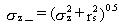
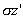

3.2 POINT SOURCE
For
a point source, such as a stack or vent, the initial value of the vertical
dispersion parameter is equal to the radius of the release area. The plume
from a stack or vent is thus assumed to have an initial size on the order
of the stack or vent.

(46)
where
= resultant vertical dispersion parameter (m)
rs = radius of release point (m).